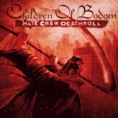

|
|
||
Children of Bodom : Hate Crew Deathroll (2003) |
|

http://www.cobhc.com |
1. Needled 24/7 4:08 |
8.5/10 |
|
Hate Crew Deathroll es el cuarto álbum del exitoso grupo finlandés Children of Bodom. Pioneros, o cuando menos el grupo más representativo, de lo que algunos llaman death metal melódico o técnico, este disco es una muestra más de como el doble bombo, la contundencia de las voces del death metal, la agresividad de las guitarras rítmicas del thrash, los afilados e intrincados solos del power metal, y algunos sonidos electrónicos propios del metal progresivo, pueden sonar si son mezclados y agitados cuidadosamente. El arranque de "Needled 24/7" es indudablemente COB: un rapidísimo y potente riff de guitarra que da paso al doble bombo y a la voz desgarradora de Alexi Laiho; la canción tiene un estribillo muy pegadizo y un solo de guitarra y teclados absolutamente fantástico. "Sixpounder" es un tema más lento, con una guitarra rítmica muy densa, un estribillo bastante melodioso y otro cortante solo de guitarra. "Chokehold" tiene un arranque bastante electrónico, que pronto deriva hacia un terreno mucho más agresivo sustentado sobre las muy distorsionadas guitarras, los coros gritados y algunos riffs muy logrados. El cuarto tema, "Bodom Beach Terror", quizás no está a la altura de los tres primeros, aunque de nuevo posee algunos riffs realmente inspirados. Tras otra introducción progresiva, "Angels Don't Kill" se revela como lo más cercano a una balada, eso si lúgubre y deprimente, que puede encajar realmente en el estilo de COB, lenta y con los teclados más protagonistas. Tras una melodiosa intro de teclado surge "Triple Corpse Hammerblow", canción de tempo moderado y solo de estilo casi neoclásico. La séptima pista, "You're Better off Dead", es uno de los temas más agresivos del disco, donde las guitarras rítmicas, la batería y la voz crean un sólido muro de sonido, atravesado de cuando en cuando por algunos coros y los solos. Si la anterior es una pieza contundente, "Lil' Bloodred Ridin' Hood" no se queda atrás: arrollador doble bombo, riffs de guitarra de una densidad tal que parece que puedan verse, y solos "gemelos" de guitarra y teclados. "Hate Crew Deathroll" es otro de los temas rápidos y aplastantes, donde los coros del estribillo y los solos ponen un punto de brillo sobre el tétrico fondo marcado por las guitarras, la batería y la voz. Para finalizar, en mi copia aparece como bonus track una versión de una canción de Slayer, "Silent Scream", que suena realmente cruda y desgarrada. El death metal no tiene por qué estar reñido con el virtuosismo a la guitarra. Children of Bodom hacen muchas cosas bien, por ejemplo una gran labor a los teclados, e indudablemente hacen death metal (aunque a muchos fans de este género les parezcan demasiado "suaves"), pero yo me quedo con el trabajo a la guitarra: este disco tiene algunos de los mejores riffs y solos de guitarra que he escuchado en mucho tiempo. Este es un disco muy recomendable para un amplio grupo de fans del metal, pero siempre que os guste lo más cañero y las terroríficas voces del death. En cualquier caso, tened cuidado con el segador... |
||
Rubén Béjar |
||